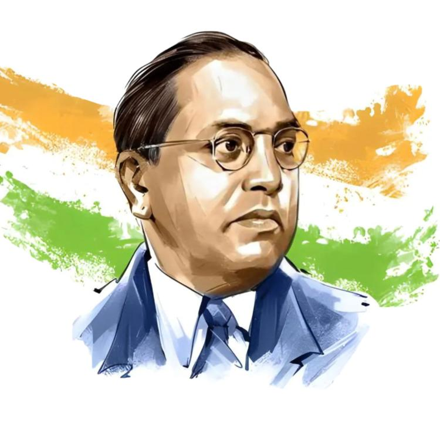
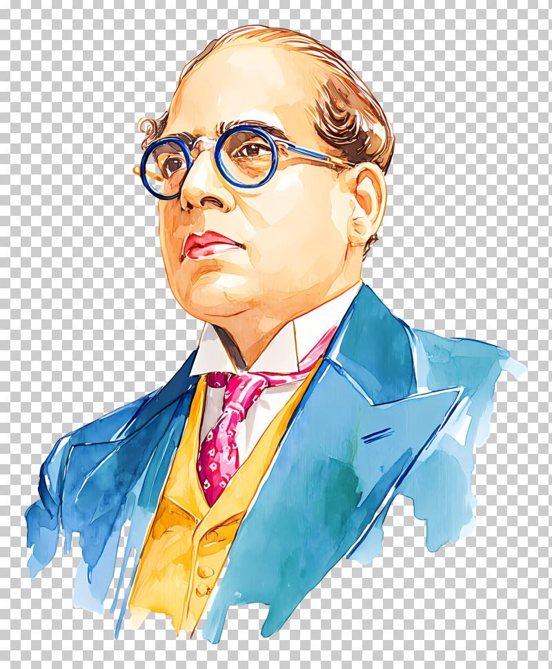
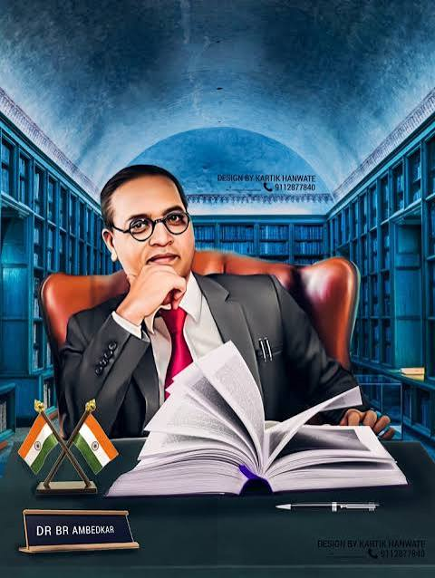

A great Indian jurist, economist, social reformer and a strong voice for equality, justice and education.
Learn More
Dr. Bhimrao Ramji Ambedkar was one of the most influential leaders in modern Indian history. He was a jurist, economist, social reformer, writer and political leader.
He dedicated his life to fighting social discrimination and promoting equality, education and justice. He believed that education was an important way to empower people and create social change.
Dr. Ambedkar played a leading role in the drafting of the Constitution of India. He also served as the first Law and Justice Minister of independent India.
Dr. B. R. Ambedkar was a highly educated scholar. He studied economics, law and political science at leading institutions in India and abroad.
He completed his early higher education in Mumbai and developed a strong interest in economics and social studies.
He studied at Columbia University in the United States and earned advanced degrees in economics and related subjects.
He pursued higher studies in economics at the London School of Economics.
He studied law at Gray's Inn in London and was called to the Bar.

